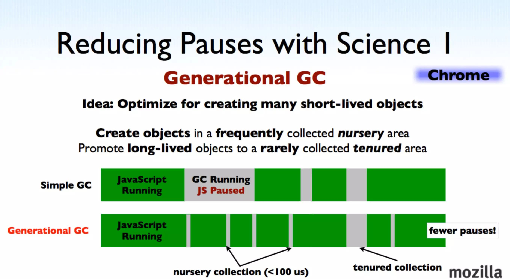
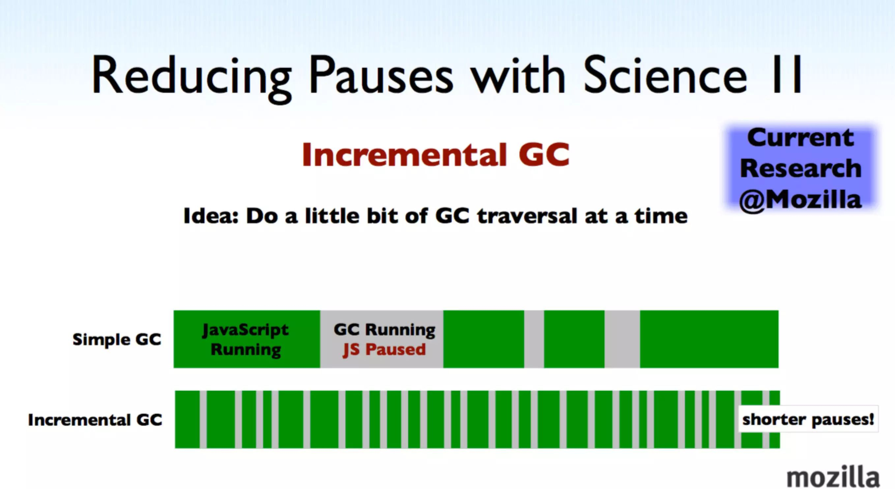

js 内存管理
前言
本人平时学习及收集内容，欢迎参入一起讨论。
内容
JavaScript 具有自动垃圾收集机制，也就是说，执行环境会负责管理代码执行过程中使用的内存。而在 C 和 C++之类的语言中，开发人员的一项基本任务就是手工跟踪内在的使用情况，这是造成许多问题的一个根源。
在编写 JavaScript 程序时，开发人员不用再关心内存使用问题，所需内存的分配以及无用内存的回收完全实现了自动管理。这种垃圾收集机制的原理其实很简单：找出那些不再继续使用的变量，然后释放其占用的内存。 为此，垃圾收集器会按照固定的时间间隔（或代码执行中预定的收集时间），周期性地执行这一操作。
正因为垃圾回收器的存在，许多人认为 JavaScript 不用太关心内存管理的问题。其实不然，如果不了解 JavaScript 的垃圾回收机制，写出来的代码会容易成内存泄漏（内存无法被回收）的情况。所以，
一、垃圾回收机制
内存的分配场景
1.1 对象
new Object();
new MyConstructor();
{a:4,b:5}
Object.create();
2
3
4
5
1.2 数组
new Array();
[1,2,3,4];
2
3
1.3 字符串
// 3.字符串，JavaScript 的字符串和 .NET 一样，使用资源池和 copy on write 方式管理字符串。
new String("hello hyddd");
"<p>" + e.innerHTML + "</p>"
2
3
4
1.4 函数
var x = function () { ... }
new Function(code);
2
3
1.5 闭包
function outer(name) {
var x = name;
return function inner() {
return "Hi, " + name;
}
}
2
3
4
5
6
7
二、内存的生命周期
函数中局部变量的正常生命周期。
- 内在分配： 局部变量只在函数执行的过程中存在。而在这个过程中，会为局部变量在栈（或堆）内存上分配相应的空间，以便存储它们的值。
- 内在使用： 然后在函数中使用这些变量，直到函数执行结束。
- 内存回收： 此时，局部变量就没有存在的必要了因此可以释放它们的内存以供将来使用。
通常，很容易判断变量是否还有存在的必要，但并非所有情况下都这么容易就能得出结论（）。
三、标记清除
JavaScript 中最常用的垃圾收集方式是标记清除。当变量进入环境（例如，在函数中声明一个变量）时，就将这个变量为“进入环境”。从逻辑上讲，永远不能释放进入环境的变量所占用的内存，因为只要执行流进入相应的环境，就可能会乃至它们。而当变量离开环境时，则将其标记为“离开环境”。
function test(){
var a = 10; //被标记，进入环境
var b=20; // 被标记，进入环境
}
test(); // 执行完毕之后a、b又被标离开环境，被回收。
2
3
4
5
6
垃圾回收器在运行的时候会给存储在内存中的所有变量都加上标记（当然，可以使用任何标记方式）。然后，它会去掉环境中的变量以及被环境中的变量引用的变量的标记（例如，闭包）。而在此之后再被加上标记的变量将被视为准备删除的变量，原因是环境中的变量已经无法访问到这些变量了。最后，垃圾回收器完成内在清除工作，销毁那些带标记的值并回收它们所占用的内存空间。
这种方式的主要缺点就是如果某些对象被清理后，内在是不连续的，那么就算内存战胜率不高，例如只有 50%，但是由于内在空隙太多，后来的大对象甚至无法存储到内存之中，一般的处理方式都是在垃圾回收后进行整理操作，这种方式也叫标记整理，整理的过程就是将不连续的内存向一端复制，使不连续的内存连续起来。
目前，IE9+、Firefox、Opera、Chrome 和 Safari 的 JavaScript 实现使用的都是标记清除式的垃圾收集策略（或类似的策略），只不过垃圾收集的时间间隔互有不同。
四、引用计数
另一种不太常见的垃圾收集策略叫做引用计数（reference counting）。引用计数的含义是跟踪记录每个值被引用的次数。当声明了一个变量并将一个引用类型值赋给该变量时，则这个值的引用次数就是 1。如果同一个值又被赋给另一个变量，则该值的引用次数加 1。相反，如果包含对这个值引用的变量又取得了另外一个值，则这个值的引用次数减 1。当这个值的引用次数变成 0 时，则说明没有办法再访问这个值了，因而就可以将其占用的内存空间回收回来。这样，当垃圾收集器下次再运行时，它就会释放那些引用次数为零的值所占用的内存。
function test(){
var a = {} ; // a的引用次数为0
var b = a ; // a的引用次数加1，为1
var c = a; // a的引用次数再加1，为2
var b = {}; // a的引用次数减1，为1
}
2
3
4
5
6
7
早期很多浏览器使用引用计数策略，但很它就遇到一个严重的问题：循环引用。循环引用指的是对象 A 中包含一个指向对象 B 的指针，而对象 B 中也包含一个指向对象 A 的引用。请看下面这个例子：
function problem(){
var objectA = new Object();
var objectB = new Object();
objectA.someOtherObject = objectB;
objectB.anotherObject = objectA;
}
2
3
4
5
6
7
在这个例子中，objectA 和 objectB 通过各自的属性相互引用；也就是说，这两个对象的引用次数都是 2。在采用 标记清除 策略的实现中，由于函数执行之后，这两个对象都离开了作用域，因此这种相互引用不是个问题。但在采用 引用计数 策略的实现中，当函数执行完毕后，objectA 和 objectB 还将继续存在，因为它们的引用次数永远不会是 0。假如这个函数被重复多次调用，就会导致大量内存得不到回收。为此，新一代浏览器都放弃了引用计数方式，转而采用标记清除来实现其垃圾收集机制。可是，引用计数导致的麻烦并未就此终结。
我们知道，IE 中有一部分对象并不是原生JavaScript对象。例如，其BOM和DOM中的对象就是使用C++ 以COM（Component Object Model，组件对象模型）对象的形式实现的，而COM对象的垃圾收集机制采用的就是引用计数策略。因此，即使 IE的JavaScript引擎是使用标记清除策略来实现的，但JavaScript访问的COM对象依然是基于引用计数策略的。换句话说，只要在 IE 中涉及COM对象，就会存在循环引用的问题。下面这个简单的例子，展示了使用COM对象导致的循环引用问题：
var element = document.getElementById("some_element");
var myObject = new Object();
myObject.element = element;
element.someObject = myObject;
2
3
4
5
这个例子在一个DOM元素（element）与一个原生JavaScript对象（myObject）之间创建了循环引用。其中，变量 myObject 有一个名为element的属性指向element对象；而变量element也有一个属性名叫someObject回指 myObject。由于存在这个循环引用，即使将例子中的 DOM 从页面中移除，它也永远不会被回收。
为了避免类似这样的循环引用问题，最好是在不使用它们的时候手工断开原生JavaScript对象与DOM元素之间的连接。例如，可以使用下面的代码消除前面例子创建的循环引用：
myObject.element = null;
element.someObject = null;
2
将变量设置为null意味着切断变量与它此前引用的值之间的连接。当垃圾收集器下次运行时，就会删除这些值并回收它们占用的内存。
为了解决上述问题，IE9把BOM 和DOM对象都转换成了真正的JavaScript对象。这样，就避免了两种垃圾收集算法并存导致的问题，也消除了常见的内存泄漏现象。
五、IE6 的性能问题
IE6 的垃圾回收是根据内存分配量运行的，当环境中存在 256 个变量、4096 个对象、64k 的字符串任意一种情况的时候就会触发垃圾回收器工作，看起来很科学，不用按一段时间就调用一次，有时候会没必要，这样按需调用不是很好吗？但是如果环境中就是有这么多变量等一直存在，现在脚本如此复杂，那么垃圾回收器会一直工作，这样浏览器就没法儿玩儿了。
微软在IE7中做了调整，触发条件不再是固定的，而是动态修改的，初始值和IE6相同，如果垃圾回收器回收的内存分配量低于程序占用内存的 15%，说明大部分内存不可被回收，设的垃圾回收触发条件过于敏感，这时候把临界条件翻倍，如果回收的内存高于 85%，说明大部分内存早就该清理了，这时候则将各种临界值重置回默认值。这一看似简单的调整，极大地提升了IE7在运行包含大量JavaScript的页面时的性能。
六、编码注意-解除引用
使用具备垃圾收集机制的语言编写程序，开发人员一般不必操心内存管理的问题。但是，JavaScript在进行内存管理及垃圾收集时面临的问题还是有点与众不同。其中最主要的一个问题，就是分配给Web浏览器的可用内存数量通常要比分配给桌面应用程序的少。这样做的目的主要是出于安全方面的考虑，目的是防止运行JavaScript的网页耗尽全部系统内存而导致系统崩溃。内存限制问题不仅会影响给变量分配内存，同时还会影响调用栈以及在一个线程中能够同时执行的语句数量。
因此，确保占用最少的内存可以让页面获得更好的性能。而优化内存占用的最佳方式，就是为执行中的代码只保存必要的数据。一旦数据不再有用，最好通过将其值设置为null来释放其引用——这个做法叫做 解除引用（dereferencing）。这一做法适用于大多数全局变量和全局对象的属性。局部变量会在它们离开执行环境时自动被解除引用，如下面这个例子所示：
function createPerson(name){
var localPerson = new Object();
localPerson.name = name;
return localPerson;
}
var globalPerson = createPerson("Nicholas");
// 手工解除globalPerson的引用
globalPerson = null;
2
3
4
5
6
7
8
9
10
由于局部变量localPerson在createPerson()函数执行完毕后就离开了其执行环境，因此无需我们显式地去为它解除引用。但是对于全局变量 globalPerson 而言，则需要我们在不使用它的时候手工为它解除引用，这也正是上面例子中最后一行代码的目的。
不过，解除一个值的引用并不意味着自动回收该值所占用的内存。解除引用的真正作用是让值脱离执行环境，以便垃圾收集器下次运行时将其回收。
七、垃圾回收的优化策略
和其他语言一样，JavaScript的垃圾回收策略也无法避免一个问题：垃圾回收时，会停止响应其他操作，这是为了安全考虑。而JavaScript的垃圾回收在100ms甚至以上，对一般的应用还好，但对于 JavaScript 游戏和动画，这种对连贯性要求比较高的应用，就麻烦了。这就是新引擎需要优化的点：避免垃圾回收造成的长时间停止响应。
David 大叔主要介绍了 2 个优化方案，而这也是最主要的 2 个优化方案了：
八、分代回收
这个和 Java 回收策略思想是一致的。目的是通过区分「临时」与「持久」对象；多回收「临时对象区」（young generation），少回收「持久对象区」（tenured generation），减少每次需遍历的对象，从而减少每次 GC 的耗时。Chrome 浏览器所使用的 V8 引擎就是采用的分代回收策略。 如图：

九、增量回收
这个方案的思想很简单，就是「每次处理一点，下次再处理一点，如此类推」。这种方案，虽然耗时短，但中断较多，带来了上下文切换频繁的问题。Firefox 浏览器所使用的 JavaScript 引擎就是采用的增量回收策略。 如图：

因为每种方案都其适用场景和缺点，因此在实际应用中，会根据实际情况选择方案。例如：如果大量对象都是长期「存活」，则分代处理优势也不大。
十、内存泄露
- 意外的全局变量: 无法被回收
- 定时器: 未被正确关闭，导致所引用的外部变量无法被释放
- 事件监听: 没有正确销毁 (低版本浏览器可能出现)
- 闭包: 会导致父级中的变量无法被释放
- dom 引用: dom 元素被删除时，内存中的引用未被正确清空
十一、查看 Chrome 浏览器下的 CG 过程
总结
- 离开作用的值将被自动标记为可以回收，因此将在垃圾收集期间被删除。
- “标记清除”是目前主流的垃圾收集算法，这种算法的思想是给当前不使用的值加上标记，然后再回收其内存。
- 另一种垃圾收集算法是“引用计数”，这种算法的思想是跟踪记录所有值被引用的次数。JavaScript 引擎目前都不再使用这种算法；但在 IE 中访问非原生 JavaScript 对象（如 DOM 元素）时，这种算法仍然可能会导致问题。
- 当代码中存在循环引用现象时，“引用计数”算法就会导致问题。
- 解除变量的引用不仅有消除循环引用有助于消除循环引用现象，而且对垃圾收集也有好处。为了确保有效地回收内存，应该及时解除不再使用的全局对象、全局对象属性以及循环引用变量的引用。
参考资料
- 垃圾回收和内存管理
- JavaScript 是如何工作的：JavaScript 的内存模型
- JavaScript 如何工作:内存管理+如何处理 4 个常见的内存泄漏
- 「前端进阶」JS 中的内存管理
- 【JavaScript】【重温基础】22.内存管理
- 【第 1821 期】前端内存优化的探索与实践
- 《高程第 3 版》
- 《深入浅出 nodejs》
联系作者
平凡世界，贵在坚持。